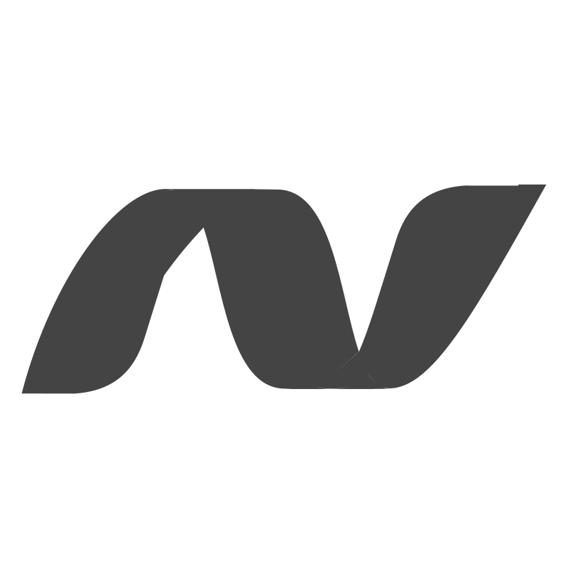

Προφίλ
.NET
Με πάνω από 4 χρόνια επαγγελματικής εμπειρίας στη .NET και C#, έχω αναπτύξει web εφαρμογές χρησιμοποιώντας Blazor, τις έχω αναπτύξει στο Azure και έχω υλοποιήσει ισχυρούς μηχανισμούς αυθεντικοποίησης και εξουσιοδότησης. Επιπλέον, έχω εκτενή εμπειρία στην ανάπτυξη εφαρμογών για desktop με WPF και παλαιότερα με Windows Forms. Και φυσικά, έχω χρησιμοποιήσει εκτενώς το MVVM.
 Βάσεις Δεδομένων
Βάσεις Δεδομένων
Έχω μεγάλη εμπειρία στον σχεδιασμό και την ενσωμάτωση βάσεων δεδομένων, με εξειδίκευση τόσο σε SQL (SQL Server, MySQL κ.ά.) όσο και σε NoSQL (Firebase) συστήματα.
Χρησιμοποιώ συχνά ORMs όπως τα Entity Framework και NHibernate όπου χρειάζεται.
 Ανάπτυξη Εφαρμογών Κινητών
Ανάπτυξη Εφαρμογών Κινητών
Έχω σχεδιάσει, αναπτύξει και δημοσιεύσει εφαρμογές για κινητά, αρχικά ως χόμπι, με κάποιες να αποφέρουν κέρδος.
Ξεκίνησα με εγγενείς Android εφαρμογές με Java, αλλά απόλαυσα ιδιαίτερα τη δημιουργία υβριδικών λύσεων με Flutter. Μπορείς να δεις κάποιες από αυτές εδώ.
 Η Προσέγγισή μου στην Ανάπτυξη Λογισμικού
Η Προσέγγισή μου στην Ανάπτυξη Λογισμικού
Ξεκίνησα ως λάτρης του Clean Code, αλλά με τον καιρό υιοθέτησα μια πιο πραγματιστική προσέγγιση. Στόχος μου είναι να γράφω κώδικα που λειτουργεί αποτελεσματικά, με έμφαση στην αναγνωσιμότητα και τον καλό σχεδιασμό. Έχω εργαστεί με παλαιά, χαοτικά συστήματα καθώς και με καλά οργανωμένες και αρθρωτές βάσεις κώδικα — έχοντας αντλήσει πολύτιμες εμπειρίες και από τις δύο περιπτώσεις. Παρόλο που κάποιοι λένε πως το TDD έχει πεθάνει, εγώ βρίσκω αξία στην προσέγγιση και την εφαρμόζω όπου έχει νόημα. Προτιμώ τη δια ζώσης συνεργασία από την απομακρυσμένη, γιατί μου αρέσει η προσωπική ανταλλαγή ιδεών — κάτι που κάνει το pair programming να μου ταιριάζει πολύ.
 LLMs
LLMs
Από την εμφάνισή τους, χρησιμοποιώ μεγάλα γλωσσικά μοντέλα όπως το ChatGPT και το Copilot για να αυξήσω την παραγωγικότητα σε διάφορες εργασίες. Αν και αναγνωρίζω τις εντυπωσιακές τους δυνατότητες, παραμένω προσεκτικός στην εξάρτηση από αυτά για την ανάπτυξη λογισμικού, όπου η ακρίβεια και η εμπιστοσύνη στον κώδικα είναι κρίσιμες. Αυτό που σίγουρα σκοπεύω να κάνω στο μέλλον είναι να αναπτύξω συστήματα που αξιοποιούν τα LLMs — θα έχει πλάκα!
 Επιπλέον Δεξιότητες και Ενδιαφέροντα
Επιπλέον Δεξιότητες και Ενδιαφέροντα
Όπως ανέφερα, είμαι παθιασμένος χρήστης του Linux, τόσο σε επιτραπέζια όσο και σε server περιβάλλοντα. Βρίσκω το CLI εξαιρετικά φιλικό όταν ξέρω τι κάνω, καθώς μου επιτρέπει να επικεντρώνομαι στις πληροφορίες που χρειάζομαι χωρίς περιττό περιβάλλον. Αν με ρωτήσεις ποια είναι η αγαπημένη μου γλώσσα, θα έλεγα C. Μου αρέσει να γράφω κώδικα σε απλούς επεξεργαστές κειμένου, με αγαπημένο το Sublime Text. Όταν το debugging είναι απαραίτητο, βασίζομαι στο Visual Studio ή το Rider. Είμαι περίεργος για το Vim — ίσως είναι η επόμενη και τελική μου επιλογή.
Επιστροφή στην αρχική σελίδα
Επαγγελματική Εμπειρία
Εκτός από την εταιρεία λογισμικού μου και την ανεξάρτητη ανάπτυξη, έχω εργαστεί σε διάφορους ρόλους. Αυτή η ενότητα επικεντρώνεται σε θέσεις σχετικές με το λογισμικό.
Στην DVGW Service & Consult, δημιουργούμε λύσεις λογισμικού για πελάτες και εσωτερική χρήση, αξιοποιώντας την τεχνολογική στοίβα της Microsoft. Εστιάζουμε κυρίως σε εφαρμογές .NET που αναπτύσσονται στο Azure, ενώ περιστασιακά χρησιμοποιούμε Python και PHP. Διαχειριζόμαστε μεγάλες βάσεις δεδομένων, κυρίως με SQL Server και MySQL, και συχνά βασιζόμαστε σε ORMs όπως τα EF-Core και NHibernate.
Συνεργάζομαι με έναν συνάδελφο για τον εκσυγχρονισμό του Integra, μεταβαίνοντας από το Desktop στο Web, προσφέροντας νέες λειτουργίες και βελτιώνοντας την εμπειρία χρήστη. Το έργο αυτό αποτελεί βασικό προϊόν για τους πελάτες μας και συμβάλλει σημαντικά στα έσοδα της εταιρείας.
Τέλος, είμαι ο μοναδικός προγραμματιστής και υπεύθυνος συντήρησης ενός εσωτερικού έργου για την ομάδα IT — ένα εργαλείο απαραίτητο που διευκολύνει σημαντικά την καθημερινότητά τους.
Στην Teutologic Software, εργάστηκα ως Junior Προγραμματιστής Λογισμικού, συνεισφέροντας σε διάφορες πτυχές της ανάπτυξης λογισμικού, περιλαμβάνοντας:
- Ανέπτυξα και ενσωμάτωσα συστατικά UI για την εφαρμογή CAD Visiometa χρησιμοποιώντας C#, .NET και WPF. Αυτά τα αυτόνομα εργαλεία ενσωματώθηκαν αργότερα στο σύστημα, ακολουθώντας το μοτίβο MVVM. Παραδείγματα περιλαμβάνουν έναν προσαρμοσμένο επιλογέα χρωμάτων, ένα δυναμικό μενού που εμφανίζει στοιχεία εφαρμογής με περίπλοκες κινήσεις ή ένα συστατικό δημιουργίας κωδικού πρόσβασης με εκτενείς ελέγχους εγκυρότητας.
- Συνέβαλα στη δημιουργία μιας λειτουργίας εισαγωγής για τη δική μας ιδιόκτητη 3D μορφή αρχείων του Blender. Αυτό περιλάμβανε αντιστροφή μηχανισμών για να κατανοήσουμε πώς μια συγκεκριμένη έκδοση του Blender αποθηκεύει τα 3D στοιχεία (mesh) και να επιτρέψουμε την εισαγωγή αυτών των meshes στο σύστημά μας CAD.
- Συνέβαλα στη δημιουργία του δικού μας προσαρμοσμένου πλαισίου δοκιμών για την εξασφάλιση ποιότητας λογισμικού.
- Διαχειριζόμουν εργασίες σχετικές με έναν Cloud Licensing Server για το CAD μας.
- Χρησιμοποιούσα Bash scripts για αυτοματοποίηση εργασιών.
Στα τελευταία στάδια της εκεί παρουσίας μου, καθοδήγησα junior προγραμματιστές, υποστηρίζοντας την ανάπτυξη των δεξιοτήτων τους. Επίσης, εργάστηκα στην εξερεύνηση των θερμοφυσικών υλικών για λογισμικό προσομοίωσης.
Εκπαίδευση & Πιστοποιήσεις
Πανεπιστήμιο Πειραιά
Μεταπτυχιακό στην Πληροφορική
Διπλωματική εργασία: Έρευνα στις Τεχνολογίες Δικτύου Android και ανάπτυξη του DosDroid.
Udacity - Google
Nanodegree Android Developer
Έργο: Ανάπτυξη της εφαρμογής Android "Greek Podcasts". Οι χρήστες περιηγούνται και ακούνε podcasts στην ελληνική γλώσσα.
Πανεπιστήμιο Πατρών
Πτυχίο στην Πληροφορική και τα Μαζικά Μέσα
Διπλωματική εργασία: Ανάπτυξη εφαρμογής τουριστικού οδηγού για ελληνικό νησί.
Δημοσιευμένα Projects
Παρακάτω είναι μερικά από τα projects που έχω δημοσιεύσει από χόμπι κατά καιρούς.

Ρεμπέτες: Ανακαλύπτοντας το Ρεμπέτικο
Ως παθιασμένος υποστηρικτής της διατήρησης της πολιτιστικής κληρονομιάς μέσω της τεχνολογίας, ανέπτυξα την εφαρμογή "Rebetes" για να ικανοποιήσω τις ανάγκες δικές μου και διάφορων φίλων μουσικών.
Κύρια Χαρακτηριστικά:
- Προσβασιμότητα χωρίς σύνδεση: Η εφαρμογή παρέχει μια ολοκληρωμένη συλλογή στίχων ρεμπέτικων τραγουδιών (σχεδόν όλα τα τραγούδια), πληροφορίες για καλλιτέχνες, συμπεριλαμβανομένων συνθετών, τραγουδιστών και συγγραφέων, καθώς και λεπτομέρειες μουσικής όπως κλίμακες και ρυθμούς. Όλες αυτές οι πολύτιμες πληροφορίες είναι διαθέσιμες χωρίς σύνδεση στο διαδίκτυο, εξαλείφοντας την ανάγκη για σύνδεση στο διαδίκτυο κατά τη διάρκεια των εμφανίσεων.
- Εύχρηστη Αναζήτηση: Μια γρήγορη και φιλική προς τον χρήστη λειτουργία αναζήτησης επιτρέπει στους μουσικούς να εντοπίζουν γρήγορα συγκεκριμένα τραγούδια ή να εξερευνούν το εκτενές ρεπερτόριο του ρεμπέτικου.
- Δημιουργία Λίστας Αναπαραγωγής: Για να διευκολύνουν την πλοήγηση τους, οι χρήστες μπορούν εύκολα να δημιουργούν λίστες αναπαραγωγής προσαρμοσμένες για κάθε συνεδρία, εξασφαλίζοντας μια ομαλή και αφυπνιστική μουσική εμπειρία.
Τεχνολογική Πλατφόρμα:
Χτισμένη με τη χρήση Flutter και Dart, η εφαρμογή Rebetiko λειτουργεί ομαλά σε συσκευές Android και iOS. Η ισχυρή της βάση βρίσκεται σε μια ανθεκτική βάση δεδομένων SQLite για αποδοτική αποθήκευση. Σενάρια Python χρησιμοποιήθηκαν για την εξαγωγή πληροφοριών από διάφορες online πηγές.
Διαθεσιμότητα:
Παρόλο που είναι διαθέσιμη στο Google Play, η εφαρμογή θα δημοσιευτεί επίσης και στο App Store επιτρέποντας την υποδοχή και των χρηστών iOS.
Google Play Store
LyricsLoom: Αποκωδικοποιώντας τη Μουσική με Python και Beautiful Soup
Το LyricsLoom είναι μια εφαρμογή σε Python σχεδιασμένη για το web scraping στίχων από συγκεκριμένη ιστοσελίδα και αποθήκευση των συλλεγμένων πληροφοριών τραγουδιών σε βάση δεδομένων SQLite.
Κύρια Χαρακτηριστικά:
Το έργο υποστηρίζει πολλά χαρακτηριστικά, συμπεριλαμβανομένης της εξαγωγής στίχων, καλλιτεχνών, ετικετών και άλλων μεταδεδομένων. Οι χρήστες μπορούν να συνεισφέρουν στο έργο, και η τεκμηρίωση παρέχει οδηγό για την εγκατάσταση, τη χρήση και τη συνεισφορά.
Κώδικας Πηγής
Memogame: Το Αγαπημένο Παιχνίδι Αντιστοίχισης Ζευγαριών
Εισέλθετε στον κόσμο του Memogame, ένα μαγευτικό παιχνίδι αντιστοίχισης ζευγαριών διαθέσιμο στο Google Play. Νικήστε τις βαθμολογίες των άλλων σε πάνω από 200 διαφορετικά διαθέσιμα τραγούδια.
Τεχνολογικό Περιβάλλον:
Αναπτύχθηκε φυσικά σε Java, το Memogame εξασφαλίζει μια ομαλή και βελτιστοποιημένη εμπειρία παιχνιδιού για τους χρήστες Android. Το Memogame χρησιμοποιεί το Firebase για την αποθήκευση των βαθμολογιών online, επιτρέποντας στους παίκτες να ανταγωνίζονται και να επιδεικνύουν τη μνήμη τους παγκοσμίως.
Κατάστημα Google Play Κώδικας ΠηγήςDoSdroid: Η Δύναμη Του Ενός
Το DoSdroid οργανώνει τη σύνδεση και συγχρονισμό πολλαπλών κινητών συσκευών για συντονισμένη επίθεση Διακοπής Υπηρεσιών (DoS) εναντίον ενός HTTP διακομιστή.
Οι χρήστες μπορούν να δημοσιεύσουν HTTP διακομιστές που γίνονται επιλέξιμοι για επίθεση σε συγκεκριμένο μέλλοντα χρόνο. Άλλοι χρήστες μπορούν να ενταχθούν στην επίθεση, και όταν έρθει η κατάλληλη στιγμή, εκκινούν συλλογικά την επίθεση.
Αποποίηση Ευθυνών:
Ενώ η περιγραφή της εφαρμογής αναφέρει μια επίθεση DoS, ο πραγματικός σκοπός της εφαρμογής είναι να αξιοποιεί τη συλλογική δύναμη πολλών συσκευών για ένα κοινό στόχο. Το έργο αυτό χρησίμευσε επίσης ως έρευνα στις τεχνολογίες δικτύου του Android, συμπεριλαμβανομένων του Bluetooth, NFC, Wi-Fi P2P, κλπ., κατά τη διάρκεια της ανάπτυξής του.
Διαθεσιμότητα:
Λόγω της μοναδικής φύσης της εφαρμογής, αυτή δεν είναι επιλέξιμη για δημοσίευση σε δημοφιλή καταστήματα όπως το Google Play. Συνεπώς, για να χρησιμοποιήσετε την εφαρμογή, θα χρειαστεί να κατεβάσετε τον πηγαίο κώδικα και να κατασκευάσετε το έργο μόνοι σας.
Κώδικας ΠηγήςΕκπαίδευση & Πιστοποιήσεις
Πανεπιστήμιο Πειραιά
Μεταπτυχιακό στην Πληροφορική
Διπλωματική εργασία: Έρευνα σχετικά με τις Τεχνολογίες Δικτύωσης Android και ανάπτυξη του DosDroid.
Udacity - Google
Πιστοποίηση Android Developer Nanodegree
Πρότζεκτ: Ανάπτυξη της Android εφαρμογής "Greek Podcasts". Οι χρήστες περιηγούνται και ακούνε podcasts στην ελληνική γλώσσα.
Πανεπιστήμιο Πατρών
Πτυχίο Πληροφορικής και Μαζικών Μέσων
Διπλωματική: Ανάπτυξη εφαρμογής οδηγού τουριστικής πλοήγησης για ένα νησί της Ελλάδας.